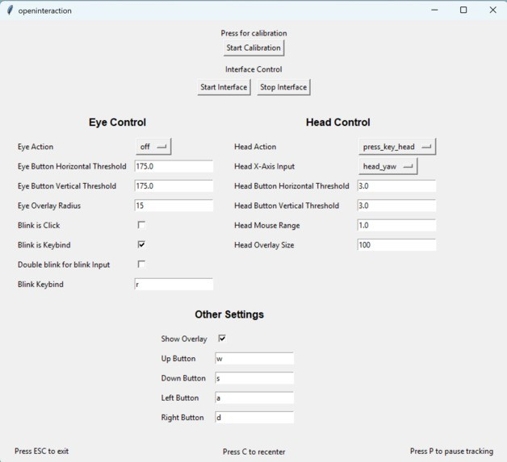

OpenInteraction
A way to drive a desktop computer with no hands, using eye tracking, head pose, and blink detection off a single webcam.
Systems that let someone control a computer without their hands already exist commercially. They are also expensive, closed source, and hard to adapt to one particular person's range of movement, which is a problem given that the people who most need them often have the least typical range of movement. The premise was that a webcam and open models cover a useful part of that ground, and that the person using the system should be the one configuring it.
Built with Jack Dohrn over NeuroHack Fall 2025, where it placed second. We worked across all of it together rather than splitting it into separate pieces.
What it does
Three input channels come off one camera: gaze direction from a machine-learning gaze model, head pose from MediaPipe's 3D face mesh, and blink detection with an optional double blink as a click. Those map onto cursor movement and arbitrary key bindings through a handler layer, so what a given gesture does is configuration rather than code. Live overlays draw where the system thinks you are looking and how your head is turned, and hotkeys pause, recenter, or exit without requiring a mouse.
{kind=link}

How it fits together
The system is written in Python throughout. OpenCV takes the camera, EyeTrax supplies the gaze estimate, MediaPipe Face Mesh supplies head pose. Output from both is far too noisy to point with, so it passes through KDE smoothing before it reaches the cursor. PyQt5 renders the overlays, Tkinter runs the settings GUI, pynput handles key simulation and global hotkeys, and pyautogui moves the cursor. Settings are stored in JSON, so a configuration tuned to one person survives a restart.
The hard parts
The tracking itself took the first day. The remaining work went into making the output usable:
- Gaze estimates jitter, and smoothing that jitter introduces latency. Beyond a certain point, a lagging cursor is harder to use than an unsteady one.
- Mapping gaze coordinates onto screen space, and keeping that mapping honest as the head drifts away from where calibration happened.
- Blink detection that survives changing light without reading a slow blink as a click.
- Running Tkinter and PyQt in one process, which means two event loops that do not naturally coexist.
- Race conditions when the settings GUI wrote config while the tracking loop was reading it.
- Overlays that flickered, or moved off the screen entirely.
None of these are visible in a working demo, and all of them separate a tracking script from something a person can actually use.
PythonOpenCVMediaPipeEyeTraxPyQt5Tkinter